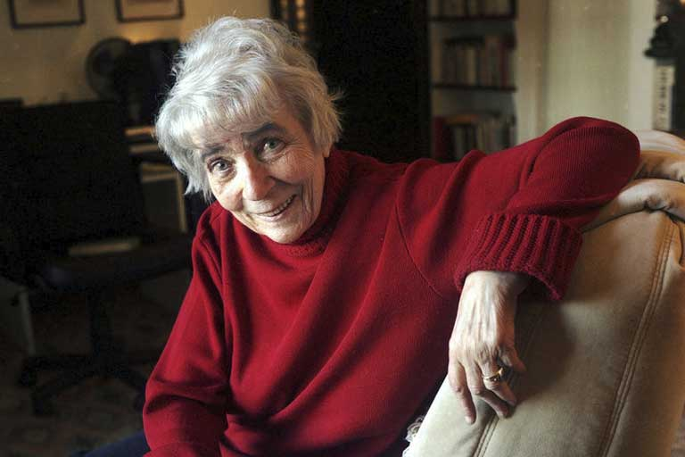

Christine Brooke-Rose
(16 January 1923 – 21 March 2012)

xbr by Alexa Brunet / Transit
Christine Brooke-Rose was a writer, a literary critic, and a teacher.
I try to gather resources about her life and work on this page. If you find something amiss, or want to point to resources not yet listed here, please contact me .
Dec. 16th, 1861 . Birth of George Warder Blair (Gd-Father)1888 . Marriage of George Butler (Gd Father) and Laure Paturin (Gd Mother)1903 . Death of Gt-Gd Mother Fanny Butler in Bossum (Netherlands)Jan. 16th, 1923 . Birth in Geneva, 7 rue Lévrier, 3d floor1934 . Death of her fatherMay, 16th, 1944 . Marries Rodney Ian Shirley Bax1946 . Enters Somerville College, Oxford - reads EnglishJan. 1948 . Divorces Rodney Ian Shirley BaxFeb. 13th, 1848. Marries Jerzy Pietrkiewicz 1949 . Bachelor of Arts, Somerville College, Oxford1953 . Master of Arts, Somerville College, Oxford1954 . Ph.D. in medieval literature, University College, London1954 . Gold, poem, published1957 . The Languages of Love, novel, published1958 . The Sycamore Tree, novel, published1958 . A Grammar of Metaphor, criticism, published1960 . The Dear Deceit, novel, published1961 . The Middlemen: A Satire, novel, published1964 . Out, published1965 . Society of Authors Travelling Prize for Out1966 . Such, publised1966 . James Tait Black Memorial Prize for Such1968 . Between, published1968 . Separates from Jerzy Pietrkiewicz1968 . Joins Université de Paris, Vincennes, at the invitation of Hélène Cixous1968 . In the Labyrinth - translated from A. Robbe-Grillet, published1969 . Arts Council Translation Prize for In the Labyrinth1970 . Go When You See the Green Man Walking, short stories, published1971 . A ZBC of Ezra Pound, criticism, published1975 . Thru, published1976 . A Structural Analysis of Pound's Usura Canto: Jakobson's Method Extended and Applied to Free Verse, criticism, published1981 . A Rhetoric of the Unreal: Studies in Narrative and Structure, Especially of the Fantastic, criticism, published1981 . Marries Claude Brooke1982 . Divorces Claude BrookeJuly, 1984 . Her mother suffers an attack1984 . Amalgamemnon, published1986 . Xorandor, published1986 . Interviewed for the BBC Bookmark program by Ian Hamilton1988 . Retires from Université de Paris, Vincennes, and moves to ProvenceNov. 1989 . Death of her aunt Giovanna (Vanna)1990 . Verbivore, published1991 . Stories, Theories, and Things, literary theory, published1991 . Textermination, published1996 . Remake, published1998 . Next, published1999 . Subscript, published2000 . Poems, Letters, Drawings, published2002 . Invisible Author: Last Essays, published2006 . Life, End of, publishedOct. 26th, 2007 . Death of Jerzy PietrkiewiczMarch, 3d, 2012 . Death of XBR.